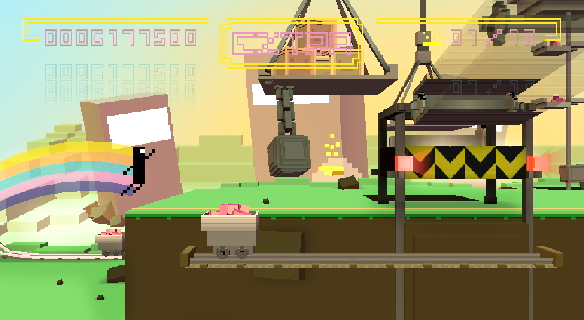

7 |
Commandes |
 |
|
Pour jouer à BIT.TRIP RUNNER, tenez la manette Wii Remote à l'horizontale.

Pour contrôler CommanderVideo, le déplacer dans son environnement et éviter les obstacles, utilisez la croix directionnelle et les boutons de la manette Wii Remote. Les mouvements de CommanderVideo sont expliqués ci-dessous.
Appuyez sur le bouton 2 et maintenez-le enfoncé pour faire planer CommanderVideo plus longtemps après un saut. Cela lui permet de franchir les obstacles plus importants et les failles plus larges.
Appuyez sur le bouton 1 pour que CommanderVideo dégage les obstacles l’empêchant de passer à coups de pied.
Sur une planche de saut pourpre, appuyez en haut sur la croix directionnelle pour envoyer CommanderVideo dans les airs pour un super saut.
Pour que CommanderVideo utilise sa raquette de BIT.TRIP BEAT pour bloquer les coups, appuyez à droite sur la croix directionnelle et maintenez enfoncé. |


 |
 |
 |